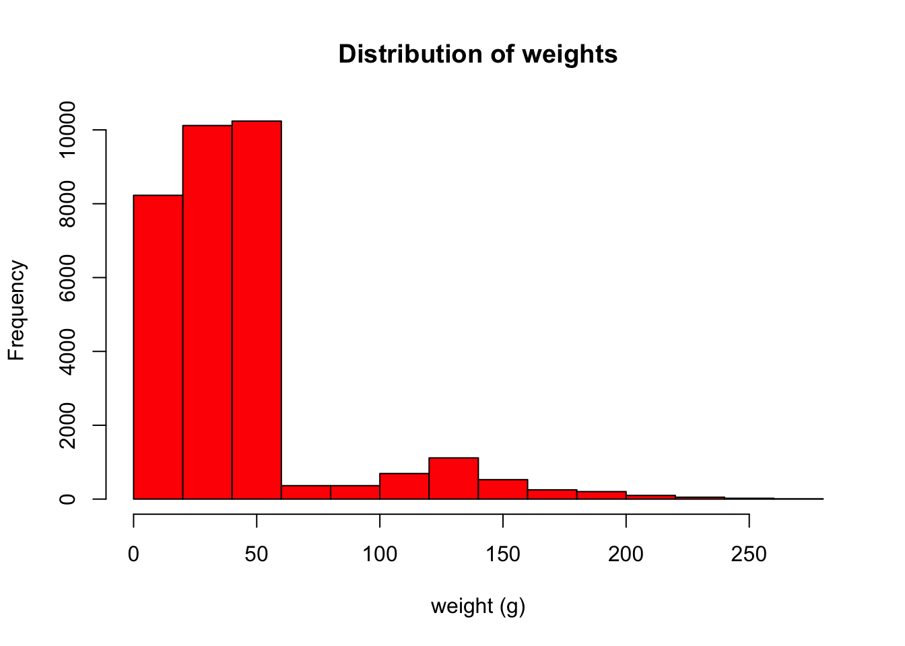

Learning Objectives
- Make decisions with
ifandelsestatements- Use a
forloop to repeat operations- Incorporate functions to repeat operations
So far everything we have done, we’ve done by hand: calculate a single mean, plot a single plot, etc. The real power of R comes from getting R to automate repetitive tasks and to make decisions for you. We’ll start this lesson with this last idea: How can we have R make decisions for us?
Let’s say that we discover from our collaborator that there was an issue in 1984. All of the scales had not been calibrated, and we need to increase the weights of any measurements made in that year by 10%. How can we go through and update our table?
First, make sure you have the surveys dataset loaded:
surveys <- read.csv("data/portal_data_joined.csv")I always like to start by quickly visualizing my data. Let’s make a quick histogram in R of the weights.
hist(surveys$weight, main = "Distribution of weights", xlab = "weight (g)", col = "red")
Our weights are between 0-250g, which sounds about right for birds, rabbits, rodents, or small reptiles.
Now let’s adjust all of our weight up by 10% if the measurement was taken in 1984.
The first thing we’ll need to do is decide if a a weight was taken in 1984 or not. One way to do this is with an if/else statement.
If/else statments take the following form. The else is optional:
if (condition is TRUE) {
do something
} else {
do different thing
}For example, we can check to see if the first entry in our surveys table is from 1984 or not:
if (surveys$year[1] == 1984) {
print("Great Scott, it's 1984!")
} else {
print("It's not 1984")
}#> [1] "It's not 1984"This may seem like a trivial example, but having the power to make R do one thing when one condition is met, and another thing when a different condition is met is very powerful.
Challenge
Let’s say we’re interested in knowing whether an animal is large or not, with a cut-off of at least one ounce. Write an
if/elsestatement that evaluates whether the 40th animal in our data is larger than an ounce. (Hint: one ounce is 28.3g)
We’ve set up an if/else statement to identify whether the first entry in our table is from 1984, but we want to know that information for all of the entries in our table. How can we make R look at each row and tell us if an entry is from 1984? Loops are a powerful tool that will let us repeat operations. For example, we can do something to every row of our dataframe. There are many type of loops, but today we will focus on the for loop. Here is the basic structure of a for loop:
for (variable in vector) {
do something
}Using the names above, each iteration of variable takes the value of one of the elements of vector. Here’s one example:
for (i in 1:10) {
print(i)
}#> [1] 1
#> [1] 2
#> [1] 3
#> [1] 4
#> [1] 5
#> [1] 6
#> [1] 7
#> [1] 8
#> [1] 9
#> [1] 10And another:
for (i in c("cat", "dog", "gerbil")) {
print(i)
}#> [1] "cat"
#> [1] "dog"
#> [1] "gerbil"Let’s use a loop to examine all of the years our surveys data was collected. Our loop will have the basic form:
for (i in 1:dim(surveys)[1]) {
}What is that top line doing? Let’s start with 1:dim(surveys)[1]. dim(surveys) will give you the dimensions of your table in rows by columns:
dim(surveys)#> [1] 34786 13You can see that our table has 34786 rows and 13 columns. Since we want to look at each row, we index dim(surveys) using [1] to just pull out the number of rows:
dim(surveys)[1]#> [1] 34786The : will create a numeric list starting at the number before the colon and incrementing by one to the number after the colon. In our case, this will result in a list from 1 to 34786, incrementing by one. To demonstrate, here is the beginning…
head(1:dim(surveys)[1])#> [1] 1 2 3 4 5 6…and end of that list:
tail(1:dim(surveys)[1])#> [1] 34781 34782 34783 34784 34785 34786Putting that together with the for statement: For each row of our surveys table, our loop will execute the code we give it.
Let’s add our if/else statment from above to our loop:
for (i in 1:dim(surveys)[1]) {
if (surveys$year[i] == 1984) {
print("Great Scott, it's 1984!")
} else {
print("It's not 1984.")
}
}That printed many lines to our terminal, and you can see by scrolling up through them that some of them say it was 1984 and some of them don’t. This isn’t particularly useful output, but it can be beneficial to build up your loops in this way using print statements so you know your loop is behaving as you thought it would.
Let’s now alter our script so that it increases the weights of any specimen measured in 1984 by 10%.
The first thing we should do is make a copy of our dataset that we will alter. This way, if we make any mistakes we will not need to reload the whole dataset from the file in our data folder.
surveys_adjusted <- surveysNow, let’s edit our loop to print out the new weight value for specimens measured in 1984:
for (i in 1:dim(surveys_adjusted)[1]) {
if (surveys_adjusted$year[i] == 1984) {
print(surveys_adjusted$weight[i]*1.1)
} else {
print("It's not 1984.")
}
}Since we aren’t actually changing the values for yeas other than 1984, let’s not print a message saying it isn’t 1984 to the terminal.
for (i in 1:dim(surveys_adjusted)[1]) {
if (surveys_adjusted$year[i] == 1984) {
print(surveys_adjusted$weight[i]*1.1)
}
}Great, so we can see that for values of weight where a number was recorded, we see an adjusted value but for values of weight. This is fine, but we really want to edit the values of weight in our surveys_adjusted table so that we can use them in further analysis. In the loop, we can assign these new values back to their corresponding cell:
for (i in 1:dim(surveys_adjusted)[1]) {
if (surveys_adjusted$year[i] == 1984) {
surveys_adjusted$weight[i] <- surveys_adjusted$weight[i]*1.1
}
}This printed no output, because we removed the print statement, but the values of weight have increased by 10%. To see that this really happened, let’s look at the mean weight in 1984 in our original and adjusted datasets:
original_1984_weight <- mean(surveys$weight[surveys$year == 1984], na.rm = TRUE)
original_1984_weight#> [1] 50.95568Now look at the weights in 1984 in the adjusted dataset:
adjusted_1984_weight <- mean(surveys_adjusted$weight[surveys_adjusted$year == 1984], na.rm = TRUE)
adjusted_1984_weight#> [1] 56.05125Are these values 10% more than the original 1984 dataset?
original_1984_weight * 1.1#> [1] 56.05125Great, we have a dataset now where the weights have been adjusted in 1984. We may want to use this dataset in the future or give it to collaborators, so we should save this new dataset to a file.
To save a table to a file, you can use the write.table function, which has the following syntax:
write.table(table_variable, "name_of_file_to_write_to", sep=",", row.names=FALSE, col.names=FALSE, quote=FALSE)The first arguement asks for the variable the table you wish to write out is stored. Then you give it the path and name of file you want to save it to. The sep arguement let’s you choose how you want the cells in your file to be delimited. Here, we’ve put a ,, so this will create a .csv file. You could also put sep="\t" for a tab-delimited file or sep="\n" if you want each cell to be in it’s own row. The other three arguments above give instructions about whether you’d like to include the row names of the data, the column names of the data, and whether you’d like quotes to be put around each cell. Putting quotes around each cell is the default and can be beneficial if you have special characters or a lot of spaces and tabs within a cell, however, most of the time you will not need this and should set quote=FALSE, especially if you plan on opening the saved file in a program other than R.
Let’s save our adjusted data to our data folder:
write.table(surveys_adjusted, "data/survey_data_1984_weights_adjusted.csv", sep=",", row.names=FALSE, quote=FALSE)Now we have a copy of this adjusted data we can use later. To check that it saved and you can load it again into R, load it using read.csv, but save it to a different variable name:
surveys_adjusted_from_file <- read.csv("data/survey_data_1984_weights_adjusted.csv")Voila!
Challenge
- Using a
forloop and anif/elsestatement, tally the number of animals that weigh over an ounce in our adjusted dataset. To get you started, here is code to create a data.frame where all recrods withNAfor the weight are removed:surveys_adj_no_na <- surveys_adjusted[!is.na(surveys_adjusted$weight), ]
- For the animals that are not over an ounce in weight, how many of them are female and how many of them are male?
Our collaborator has noticed more problems with the data. They were wrong about the calibration issues in 1984, and have told us to discard the updated table we made. However, they realize that the person who recorded the data in 1984 somehow transformed all of the data they collected - both the weights and the hindfoot_length. To get the correct values, we will need multiply the recorded values by 1.1245697375083747 and add 10 to both of those variables. Your collaborator is very insistant that you use all of the significant digits provided when you convert values!
One way to do this could be two write two separate loops - one for each variable that needs to be changed. That would be a lot of code, however, and if our collaborator came back to us again with more instructions, we’d have to remember to change both loops.
Another way would be to add a second line to the one loop we’ve already made, to change the hindfoot_length as well:
surveys_adjusted <- surveys
for (i in 1:dim(surveys)[1]) {
if (surveys$year[i] == 1984) {
surveys_adjusted$weight[i] <- surveys$weight[i]*1.1245697375083747+10
surveys_adjusted$hindfoot_length[i] <- surveys$hindfoot_length[i]*1.1245697375093747+10
}
}Do you see the problem above? While typing in that really long number, I accidently hit a 9 instead of an 8. Typos like these can happen anytime, and best practice is if you’re going to need to do something more than once, put it what’s called a function.
R is full of functions. When you take an average mean(), find the dimensions of something dim, or anything else where you type a command followed immediately by paratheses you are calling a function. Many functions you would commonly use are built, but you can create custom functions to do anything you want. In this example, we have to multiply two different columns by a very long number and then add 10. We may want to put this in a function so that we don’t have to worry about typing the number multiple times and ending up with typos like we did above.
How do we write a function? All functions in R have two parts: The input arguments and the body. When we define our own functions, they have the following syntax:
function_name <- function(args) {
body
}The arguments let us input variables into the function when it is run. The body is where we write the steps we want to follow to manipulate our data.
For example, let’s create a function that will do the numerical conversion we need and call it convert_1984:
convert_1984 <- function(myval) {
myval_adjusted <- myval*1.1245697375083747+10
return(myval_adjusted)
}This function will take in a value (myval), convert it by multiplying it by 1.1245697375083747 and adding 10, and return the adjusted value to the user. Let’s try it out on some numbers:
convert_1984(1)#> [1] 11.12457Now, let’s use this function in our loop to alter the values of weight and hindfoot_length:
for (i in 1:dim(surveys)[1]) {
if (surveys$year[i] == 1984) {
surveys_adjusted$weight[i] <- convert_1984(surveys$weight[i])
surveys_adjusted$hindfoot_length[i] <- convert_1984(surveys$hindfoot_length[i])
}
}Now, if our collaborator comes back to us for a third time, we only have to alter the convert_1984 function once, rather than trying to remember every place we converted data in our script. A general rule of thumb is if you’re going to need to do something more than once, try to put it in a function!
Challenge
Your collaborator tells you that you can use the length of the hindfoot to calculate brain volume. Apparently the hindfoot of these creatures is equal to the diameter of their skulls. Write a function that will calculate the volume of the animals skulls and apply it to this dataset. Hint: the volume of a sphere is \[4/3 * \pi * r^3\]
Data Carpentry,
2017. License. Contributing.
Questions? Feedback?
Please file
an issue on GitHub.
On
Twitter: @datacarpentry